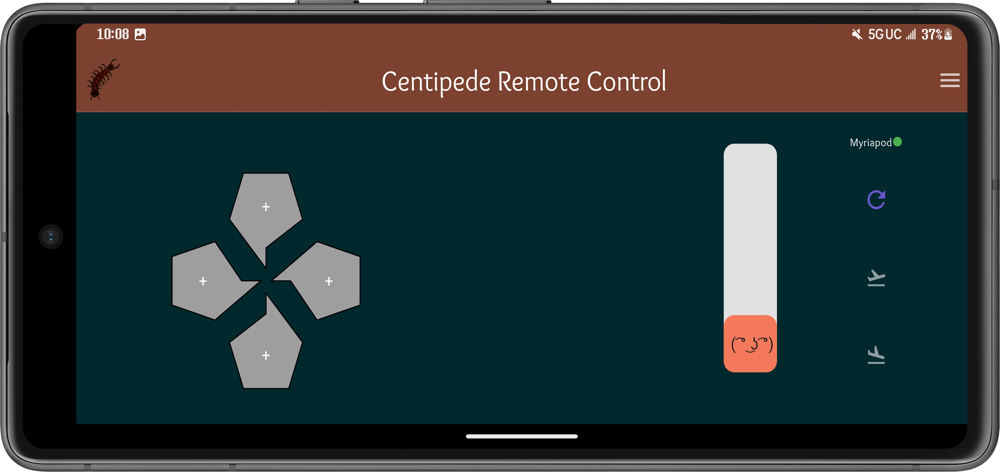
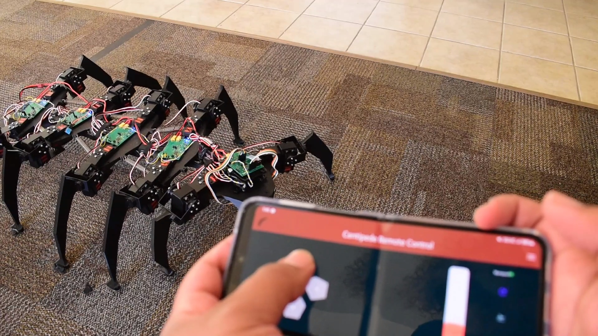
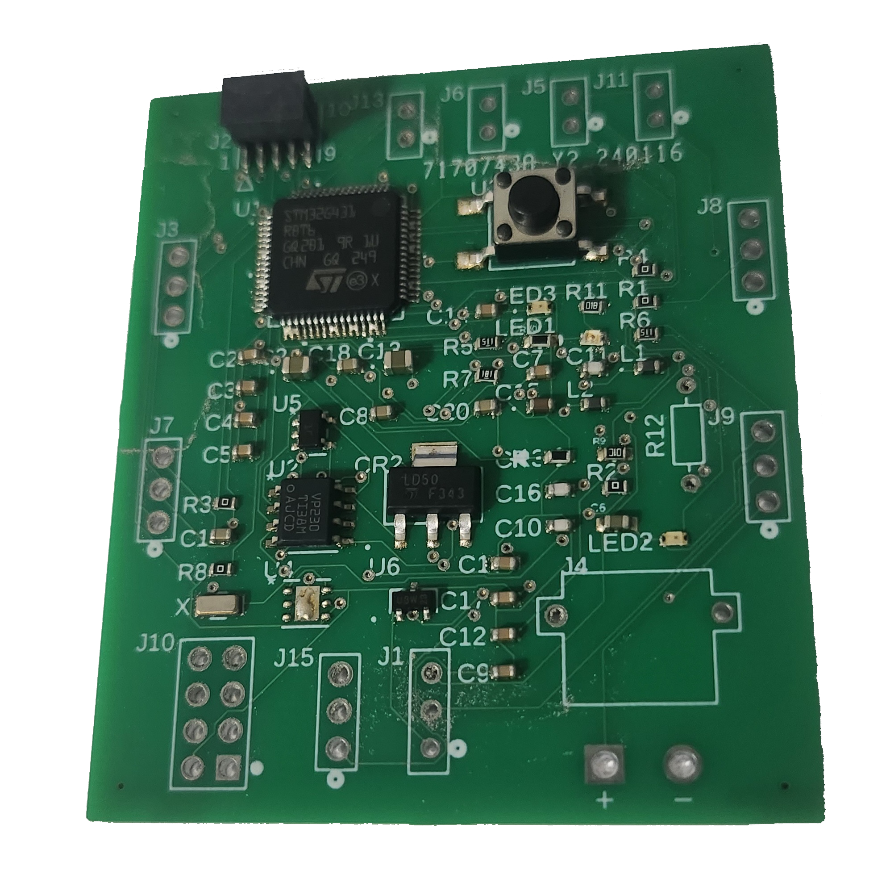
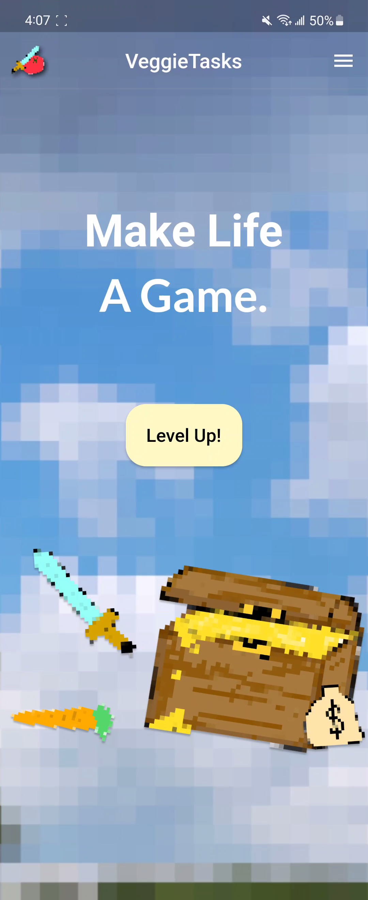
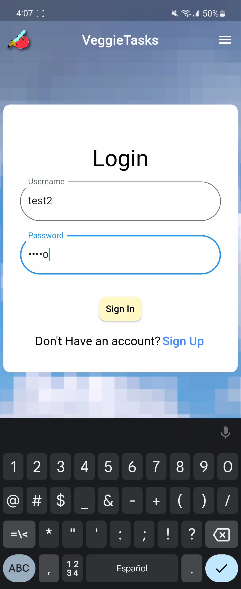
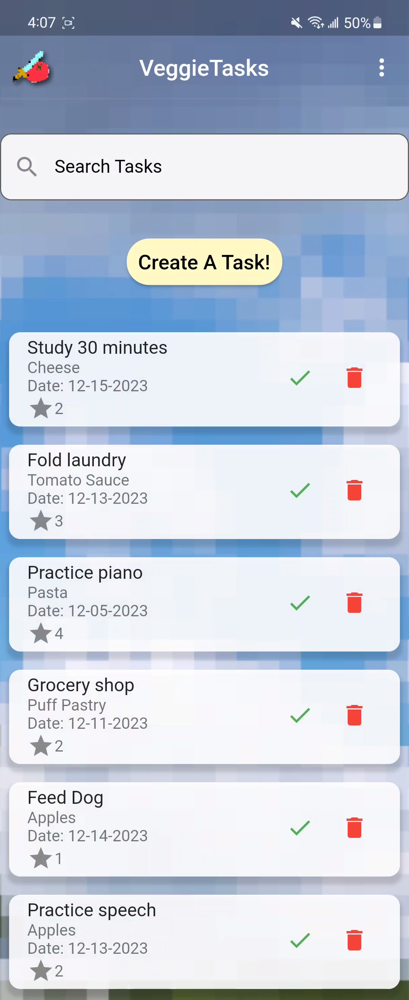
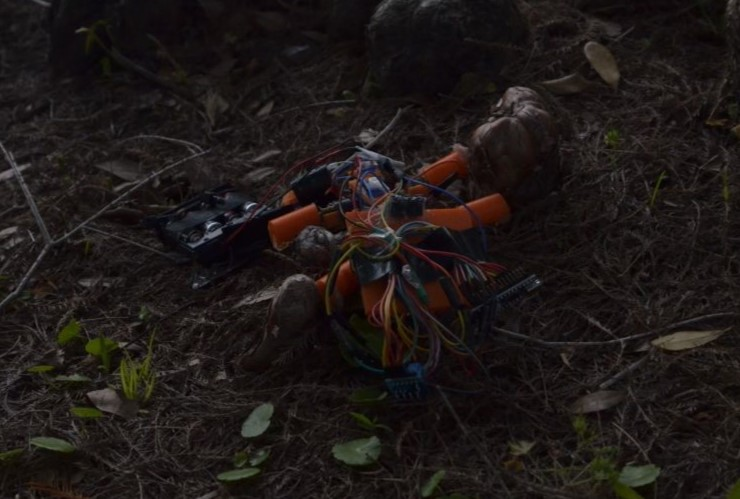

Who
I am Axel Maysonet, and I have a Bachelor's Degree in Computer Engineering,
from the University of Central Florida (Go Knights!!). Raised in Florida and
Puerto Rico, I'm fluent in both English and Spanish. I'm passionate about
helping others, being a leader and I love computers. With a vested interest
into the computers today, you'll always find me tinkering and experimenting to
build the technology of the future.
Why
I'm Axel and I love coming up with new creative solutions. With a degree in Computer Engineering,
I developed a keen interest in computer and web technologies and their potential for connecting
people and creating immersive experiences. This led me to explore web development, mobile app
development, database management frameworks, computer archeticture technologies, and machine
learning algorithms. I've had the opportunity to work on a wide range of projects including Flutter,
React, Fushion360 PCB, C, Verilog, and more.
Projects
Centipede Robot





Responsible for PCB design and the Mobile Application developement,
this group project was able to create a protype for a modular robotic
centipede platfrom. This prototype succesfully demonstrated the feasibility,
of utilizing a modular centipede in mobile robotics. With ability to attach and
detach myriapod segments with ease, the robot is incredinly versitile in its
ability to add functionality tailored to any client. My responsibilities were to
design electrical schematics and version 1 of the printed circuit board on the
centipede. As well as create and design, using Flutter, the Android application that is how the robot
is remote controlled (via Bluetooth).
VeggieTasks Manager App



An Android application designed in Flutter to be a way of gamifying tasks and managing them.
The app uses a point system to vary levels of importance/urgency, an includes user input
information such at due dates and ingredients. As well as being a task manager the app also
manages recipes and tracks which ingredients you were able to get ahold of in the tasks screen.
Document scanning software
Using Computer Vision techniques, I created a progam in Python that is able to take any image with
a sheet of paper and crop it out and resize to document size. First grayscalling the image, then
turning that into a binary image that converts every pixel to either 100% black or 100% white. Afterwards
detect contours to filter the image to remove nose and focus on the document. Then, using corner
detection, finding the corners (and their coordinates) of the paper. With these acknowledged, we can then
warp the image to our liking, in this case an upright triangle. Although this uses traditional computer
vision techniques, future versions could be trained on image data (machine learning) rather than
relying on filtering.
Salamander Robot



A small alternative mobility robot with the objective of moving without the use of wheels. I primarily designed
the embedded systems, the arduino code and wiring of components, power delivery, motor control, etc.
Computer Processor Cache Simulator
Developed in C, this program is made to simulate the movement of the cache within a CPU's hierarchy
using cache replacement policies like LRU (Least Recently Used), and FIFO to parse when data is accesed
or moved.
Involvements
UCF Stem Day Volunteer
Helped setting up and cleaning the event that hosts kids from near by schools, (Fall 2022)
Acted as guide, around the UCF campus, for visiting schools. (Fall 2023)
Students ranging from Elementary to High school visit UCF
Maker Day Faire Volunteer
Representative for Robotics Club of Central Florida, at Orlando maker Faire 2022.
Small Project Manager
Managed a group of 6 to create a contact manager website, (September 2023)
Responsible for keeping members on task, setting deadlines and goals with gantt charts and Trello
IT Volunteer Assistant at FSUS
Volunteered 100+ hours to set the school’s technology for use by students (2018-2019)
President of Engineering Society, FSUS
(August 2017 - May 2020)
Responsibility to maintain, improve, and organize the engineering society.
Organized field trips, internal competitions, meetings and any funding.
Created the first science fair at FSUS
Wall-Climber Robot Contributer
January-May 2023
Designed to climb a magnetic wall, and navigate obstacles autonomously
Designed Electro Magnetic contraption to be able to attach to walls, consisted
of circuit design, embedded work and physics mathematics
Secretary for Robotics Club of Central Florida
(December 2022 - December 2023) In addition to gaining experience working on projects, I was responsible for
keeping a record of active members, meetings, aswell as overseeing the Discord server and working with Javascript
to manage the Discord Bot.
UTA of Computer Organization, UCF
Undergraduate Teacher Assistant for the course of Computer Organization. Computer Organization focuses
on computer arithmetic, assembly instruction and I/O interface. My resonsibilites were to hold office hours
where students are able to rebuttal their quiz or test grade after having a discussion on the missed material.
KDLP, UCF
Knights of The Round Table Leadership Development Program:
8 week program, learning how to be in a leadership position in any registered student
organization at UCF. Acquiring knowledge of how to organize funds, information, and
members of any organization.
CAD Experience, & Adobe Photoshop/Illustrtor Experience
3-4 years of experience working in programs like Inventor, Onshape, and Solidworks. 6+ years
working in Adobe Photoshop and Illustrator.